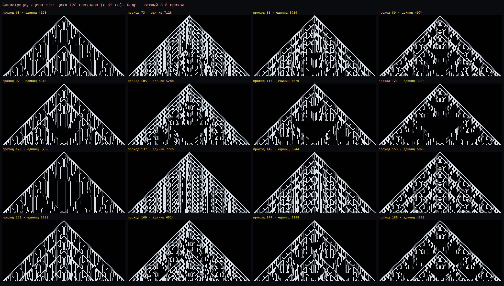
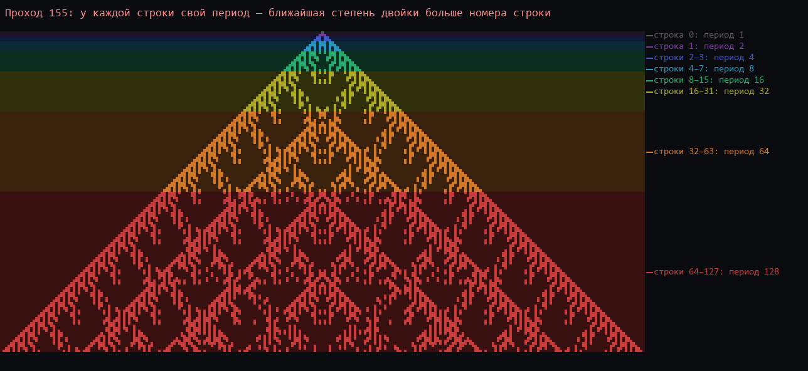
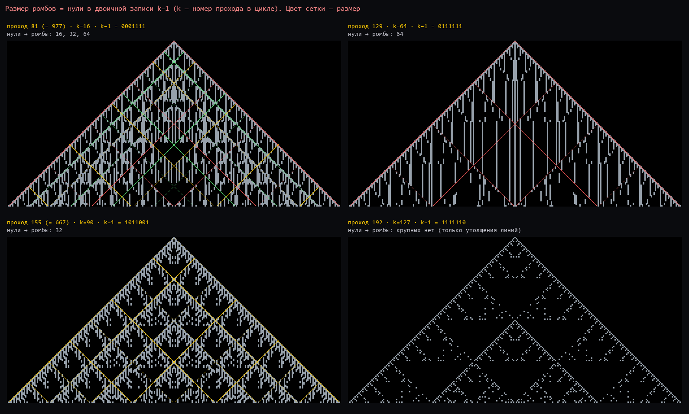
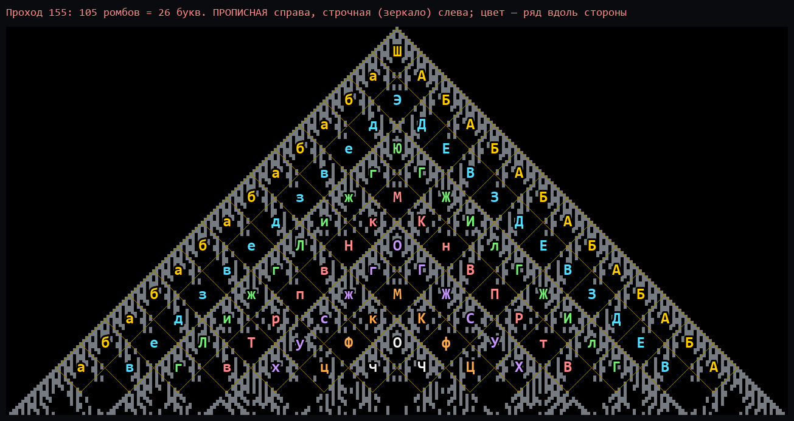
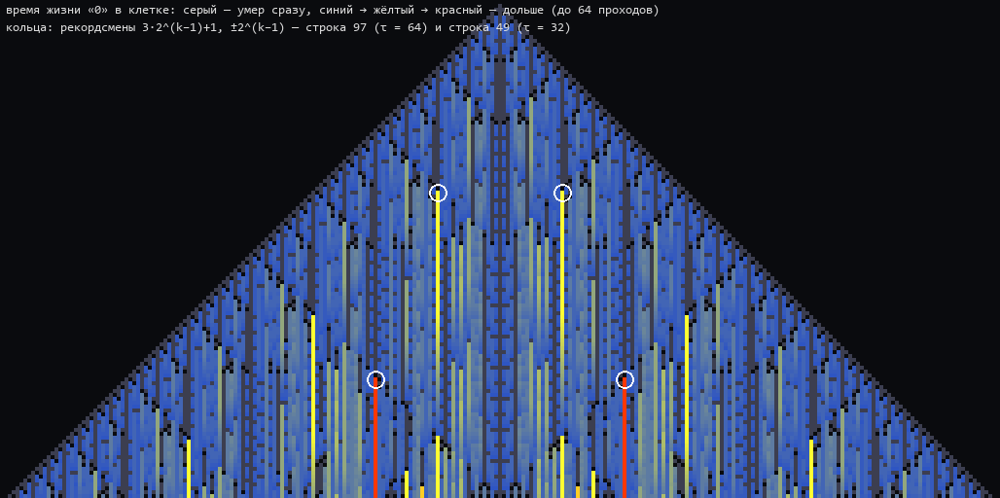

Две Аниматрицы: Code и Маятник/Excel
Версия 0.002 · 20 ноября 2026 · исследовательский разбор АНМ-001. Прочитаны действующие исходники, прежние исследования проекта и соответствующие места оригинала A New Kind of Science. Новые эволюции, тесты и браузерные проверки не запускались. Исторические измерения ниже явно отделены от математических выводов. Проверки приложения — пользователем.
Прежнее точное сравнение с Вольфрамом относилось к Аниматрице Code, только к её двоичной фазе «пробел + один символ». На странице 931 среди способов построения узора Серпинского дано повторение накопительной суммы по модулю 2. Именно это делает каждый столбец Аниматрицы, когда в нём остаются пробел и один вид символа. Совпадает преобразование, а не только изображение. Полный вариант с разными символами и правилом «при столкновении побеждает верхний» этим совпадением не охватывается. Stephen Wolfram, A New Kind of Science, «Sierpiński pattern», с. 931.
- 1. Два семейства: названия и область сравнения
- 2. Правило одной клетки
- 3. Точное совпадение с книгой
- 4. Почему всё возвращается через степень двойки
- 5. Любой будущий кадр — наложение копий
- 6. Откуда берутся треугольники и ромбы
- 7. Ромб как бит, буква и зеркало
- 8. Почему исчезают чужие символы
- 9. Разгон: что известно и что ещё не доказано
- 10. Отдельное сравнение Аниматрицы Маятника/Excel с NKS
- 11. Что установлено этим сопоставлением
1. Два семейства: названия и область сравнения
| Название в описаниях | Где открыть | Что преобразует | Что уже сравнивали |
|---|---|---|---|
| Аниматрица Code — символьная волна | Zerkalius Code; в Маятнике: Аниматрица → Клетки → Влна Code | Символы в одном вертикальном столбце; верхняя строка сохраняется, остальные обновляются сверху вниз | Статья 18 ноября: точное совпадение с NKS, с. 931, для пробела и одной непустой метки |
| Аниматрица Маятника/Excel — клеточные преобразования | В Маятнике: остальные алгоритмы меню Аниматрицы; обязательно указывать «Матрица» или «Строки», направление и правило | Биты, пустоты, выделение, диагональные/горизонтальные соседи, отражения и другие операции | Ранее только обзор отличий; отдельное сопоставление добавлено в разделе 10 этой версии |
Это два семейства по происхождению и правилам, а не две страницы и не ровно два оператора. Перенос волны Code в меню Маятника 19 ноября не превращает её в Excel-алгоритм. У клеточного семейства много вариантов; «Матрица» и «Строки» — способы пересчёта внутри него. Обычное конусное построение Маятника с маршрутами вершин — ещё один отдельный механизм, рассмотренный в статье о XOR-маятнике.
Как подписывать результат: «Аниматрица Code · полный проход 173» либо, например, «Аниматрица Маятника/Excel · 2 ед · Строки ↓ · полный проход 1». Одного слова «Аниматрица» и номера кадра недостаточно: в Code кадр может показывать отдельную строку, в перенесённой волне Маятника — полный проход, а в Excel-режимах — шаг области или строку.
Статичные компьютерные обои — именно Аниматрица Code, проходы 173–176. Цвета в этих изображениях не меняют символьный закон. Они не иллюстрируют режим «2 ед» семейства Маятника/Excel.
Разделы 2–9 ниже описывают Code, если не оговорено иное. Исходник: Zerkalius-code.html, runAnimatrixGlobal; перенос для алфавита «пробел, 0, 1»: ядро Маятника, codeWavePass. Для произвольных букв следует использовать Code: перенос в Маятник хранит биты и присутствие клетки, а не произвольный текст.

Готовая иллюстрация из исследования проекта: кадры цикла с интервалом восемь проходов. В этой работе изображения не пересчитывались.
2. Правило одной клетки
Берём два символа в одном столбце: верхний уже обновлён, нижний ещё принадлежит состоянию до текущего прохода. Результат записываем вниз.
| Верхний символ | Нижний символ | Что записывается вниз |
|---|---|---|
| Пробел | Пробел | Пробел |
| Пробел | Любой символ | Нижний символ |
| Любой символ | Пробел | Верхний символ |
α |
Такой же α |
Пробел |
α |
Другой непустой β |
Верхний символ α |
Таким образом, 0 здесь не пустота, а полноценная текстовая метка. Пара 0/0 исчезает, а 1/0 превращается в 1. Нельзя заменить все непустые клетки числом 1 и считать, что до конца разгона получится обычный XOR: для разных меток он дал бы неверный результат.
Строки нумеруются с нуля. Строка 0 не переписывается; затем обновляются строки 1, 2 и далее до последней. Это один проход. Один шаг плеера может означать лишь обновление очередной строки. Кругового соединения последней строки с первой у этого правила нет. За концом короткой строки код читает пробел; сама строка при необходимости удлиняется до длины верхней. Столбцы между собой не взаимодействуют.
Порядок важен: изменение верхней клетки способно за один полный проход дойти до самого низа. Если все строки считать одновременно из старой копии, получится другой оператор.
3. Точное совпадение с книгой
Пусть столбец содержит только пробел и метку α. Закодируем их числами: пробел = 0, α = 1. До прохода столбец равен a, после — b. Тогда:
b₀ = a₀
bᵢ = aᵢ ⊕ bᵢ₋₁, i = 1,…,N−1
Раскрывая накопление, получаем bᵢ = a₀ ⊕ a₁ ⊕ … ⊕ aᵢ. Это префиксная сумма: каждый результат — чётность количества единиц от верха до своей позиции.
У Вольфрама на с. 931 используется именно накопление FoldList с последующим приведением по модулю 2. Отображение переменных: наш отдельный столбец становится списком книги; номер строки становится позицией списка; полный проход становится одной итерацией; несколько столбцов — независимыми копиями этого же преобразования. В напечатанном примере начальный список состоит из единиц и имеет длину — степень двойки. В Code исходный столбец может быть любым. Официальный первоисточник, с. 931.
Есть и второе описание: последовательный автомат с локальным правилом «левый XOR центральный», то есть правилом 60, если повернуть наш столбец в строку, сканировать от начала к концу и положить внешний сосед перед первым элементом равным нулю. Это наш вывод из формулы. В книге последовательным автоматам посвящены с. 1034–1035; там обсуждается зависимость от уже обновлённых соседей. Общая функция OrderedUpdate напечатана на с. 1035. «Sequential cellular automata».
Автоматы второго порядка на с. 1017 — другой родственник: они соединяют два временных слоя, тогда как здесь достаточно одного столбца и определённого порядка записи. Называть их точным аналогом незачем: более прямое тождество уже найдено на с. 931. «Second-order cellular automata».
4. Почему всё возвращается через степень двойки
Обозначим через S сдвиг столбца на одну строку вниз с нулём сверху. Для высоты N выполняется Sᴺ = 0: после стольких сдвигов всё вышло за нижнюю границу. Один проход имеет вид:
T = I + S + S² + … + Sᴺ⁻¹ = (I + S)⁻¹
Здесь сложение — XOR. В такой арифметике удвоенный член исчезает, поэтому (I+S)² = I+S², затем (I+S)⁴ = I+S⁴ и так далее. Если P — ближайшая степень двойки не меньше N, то Sᴾ=0 и Tᴾ=I: любой чистый столбец возвращается.
Нужно различать период оператора и период конкретной картинки. Пустая картинка неподвижна. Если первая непустая клетка находится в строке j, работает только оставшаяся глубина L=N−j. Для такого непустого чистого столбца точный период P_L — ближайшая степень двойки не меньше L. При L=1 клетка неподвижна. Для L>1 доказательство нижней границы короткое: при q=P_L/2<L преобразование Tᑫ=I+Sᑫ на этом укороченном столбце обязательно меняет клетку на глубине q, добавляя неизменную верхнюю единицу. Значит половины периода недостаточно.
Если в строке 0 поля есть хотя бы один символ, после завершения разгона период всего поля ровно P. Именно так устроен исследованный треугольник высотой 128. У его строк наблюдаются полосы периодов:
| Номера строк | 0 | 1 | 2–3 | 4–7 | 8–15 | 16–31 | 32–63 | 64–127 |
|---|---|---|---|---|---|---|---|---|
| Период в исследованной сцене | 1 | 2 | 4 | 8 | 16 | 32 | 64 | 128 |
Для произвольного поля эти числа дают верхние границы периодов соответствующих строк; нельзя обещать ту же таблицу для пустых участков или другого начала столбцов.

Ещё одно следствие: чистая волна обратима. Старое значение восстанавливается как aᵢ=bᵢ⊕bᵢ₋₁, а a₀=b₀. В чистом режиме информация не исчезает, хотя отдельные клетки гасятся. Исходное исследование цикла.
5. Любой будущий кадр — наложение копий
После k≥1 проходов вклад строки на d позиций выше определяется чётностью биномиального коэффициента:
коэффициент сдвига d = C(d+k−1,d) mod 2
он равен 1 тогда и только тогда, когда d & (k−1) = 0
Знак & означает побитовое И. Будущий кадр собирается XOR-наложением исходного кадра, сдвинутого вниз на все допустимые d<N. Это собственный вывод из степени оператора T; связь Паскаля, чётности и правила 90 разобрана также в NKS, с. 870. «Pascal’s triangle and rule 90».
Например, от исторического прохода 65 до прохода 155 проходит k=90 шагов. У k−1=89 двоичная запись 1011001. Разрешены сдвиги 0, 2, 4, 6, 32, 34, 36, 38. В прежнем исследовании такое наложение совпало с кадром посимвольно.
Отсюда возникают повторяющиеся масштабы. При 128 строках через 64 прохода к полю прибавляется его копия со сдвигом 64. Нулевые разряды k−1 разрешают размеры сдвигов 1, 2, 4, 8… Отдельная единица над пустым столбцом после k проходов присутствует на глубине d ровно при том же условии. На проходе 2ᵐ+1 возникают заполненные блоки высотой 2ᵐ, чередующиеся с пустыми. Это точный механизм видимого «протекания». Разбор родника.
6. Откуда берутся треугольники и ромбы
Волна сама не обращается к соседним столбцам. Диагонали приходят из исходного рисунка. В исследованной сцене сначала построен треугольник правила 90 из одиночной единицы: следующая строка — XOR двух диагональных родителей. Внутри остаются напечатанные 0; снаружи, после обрезки фона, — пробелы. Для 128 строк генератор Code выделяет ширину 257.
Далее вертикальные копии этой геометрии накладываются друг на друга. Получаются ромбические фрагменты, похожие при диагональных переносах. В историческом проходе 155 при ромбах высотой 32 насчитан 21 полный ромб. За весь цикл исследование сообщает 1541 различный рисунок среди 2688 позиций «место × проход». Это статистика конкретной разметки, не универсальная константа Аниматрицы.
Интересно и чередование плотности. В исследованном цикле чётные проходы имеют примерно вдвое меньше единиц в среднем; у них не найдено вертикальных пар соседних единиц. Здесь нельзя писать «ровно вдвое»: опубликованные средние 2562 и 5075 не дают точного отношения 1:2. Ни эти числа, ни отсутствие вертикальных пар не следуют для любого исходника из одного лишь закона префиксного XOR. Кадры и статистика.

7. Ромб как бит, буква и зеркало
Ромб можно свернуть в чётность — XOR всех его клеток. Зеркальные ромбы получают одинаковый бит, потому что отражение не меняет количество единиц. Если ромб сам симметричен, пары по разные стороны оси гасят друг друга, и результат зависит только от осевых клеток.
Так строилась лестница 128 → 62 → 29 → 13 → 5 → 1 строк. Историческое исследование сообщает период 128 на всех её ступенях. Теоретически гарантировано лишь, что период фиксированной свёртки делит исходный период; равенство зависит от рисунка. Свёрнутый кадр не обязан сам эволюционировать по правилу волны: сначала обновить и затем свернуть — не то же самое, что обновить уже свёрнутое поле. Ромбы-биты и лестница.
У последнего бита внутри выбранного отрезка проявился блок 000111101111 длиной 12. Это внутренний ритм, а не период всей циклической последовательности. На стыке 128 проходов повтор нарушается: 12 не делит 128. Старое исследование связывает его со следом многократной ромбической свёртки и периодическим набором сдвигов. Он относится к этой лестнице и этой фазе исходника, а не ко всем Аниматрицам.
Ромб можно назвать буквой. На проходе 155 разметка ромбами высотой 16 дала 105 мест, 47 различных рисунков и 26 классов с точностью до отражения. Такая «надпись» — способ классификации узоров, а не обнаруженный язык. Палиндромы возникают из симметрии исходного треугольника; повторяющиеся цепочки вдоль его сторон связаны с двоичной структурой. Алфавит ромбов.
Отражение с XOR создаёт новые композиции. Для инволюции R результат B=A⊕R(A) автоматически удовлетворяет R(B)=B. Если у отражения есть неподвижные клетки, они обнуляются. Поэтому симметрия такого наложения объяснима независимо от красоты рисунка. Песочные часы на проходе 128 и шестиугольник на 155 — конкретные композиции из старого исследования; дальнейшая волна не обязана сохранять их вертикальную симметрию. Зеркальные наложения.

8. Почему исчезают чужие символы
Самая верхняя непустая клетка каждого столбца неизменна: выше неё пусто. Обозначим её символ α. Когда обновлённая клетка над чужой меткой содержит α, правило заменяет чужую метку на α. Обратно чужая метка из уже очищенной верхней части не приходит.
Почему верх не может навсегда перестать воздействовать? В чистой части столбца ни одна строка ниже постоянного источника не бывает пустой на всех проходах. Иначе из уравнения обновления следовало бы, что строка над ней тоже всегда пуста, и так до непустого источника — противоречие. Поэтому первая чужая метка рано или поздно исчезает. Повторяя рассуждение вниз по конечному столбцу, получаем: каждый столбец со временем содержит только пробел и свой верхний символ.
Это объясняет разгон и последующий XOR-цикл даже для многоцветного текста. В разных столбцах могут остаться разные метки. Нули исчезают не потому, что цифра 0 математически слабее единицы, а потому, что в рассматриваемом обрезанном треугольнике верх каждой занятой колонки — 1. При другом исходнике, например с верхними нулями, 0 сохраняются. Доказательство через метки столбцов.
9. Разгон: что известно и что ещё не доказано
В сцене «1», высота 128, прежнее исследование зафиксировало окончание разгона на проходе 65: кадры 65 и 193 совпадают. Исходные 976 нулей относятся к сохранённому состоянию прохода 15, а не к только что построенному треугольнику. Для свежего треугольника того же размера в исследовании указано 14197 нулей. Эти два числа описывают разные моменты.
Догадка «разгон всегда равен половине периода плюс один» оказалась слишком широкой. Для правила 90, одиночной единицы и обрезанного фона опубликована уточнённая формула:
начало цикла = 2ᵐ + 1,
где 2ᵐ — наибольшая степень двойки ≤ 2(N−2)/3;
для 2 ≤ N ≤ 4 в исследовании указан проход 1.
Например, при N=65…97 это проход 33, хотя период уже 128; при N=98…128 — проход 65. Статус формулы — подтверждённая прежними расчётами гипотеза в исследованном диапазоне до 1024 строк. Для клеток-рекордсменов есть комбинаторный вывод: пробел над чужим нулём некоторое время защищает его от верхней метки. Но общее доказательство, что никакая другая клетка не живёт дольше, в исходной статье прямо оставлено открытым. Называть всю формулу доказанной было бы ошибкой. Формула, рекордсмены и незакрытая верхняя граница.

10. Отдельное сравнение Аниматрицы Маятника/Excel с NKS
Это дополнение от 20 ноября. Исследованы текущие функции calculate, diagonal, horizontal, snapshotStep, scanRow, codeWavePass в ядре Маятника, а также семейства отражений и Excel-фигур. Поле хранит отдельно бит, присутствие, цвет, жирность, заливку и выделение. Совпадение формулы битов не означает совпадения всего состояния.
10.1. «2 ед · Строки ↓»: диагональное накопление
Фиксируем прямоугольное поле высоты H и ширины W, нулевой внешний край без переноса и полный проход от строки 1 до H−1. В коде один шаг «Строк» обрабатывает одну строку; полный проход содержит H−1 таких шагов. Пустоту в этой формуле проецируем в числовой ноль; присутствие и цвет формула не описывает.
B[0,x] = A[0,x]
B[y,x] = A[y,x] XOR B[y−1,x−1] XOR B[y−1,x+1]
A — биты до прохода, B — после. Два родителя уже обновлены, цель ещё старая. Столбцы связаны диагоналями. У Code, напротив, родитель один и находится строго над целью. Обе волны последовательные, но это разные операторы.
Обозначим через D взятие XOR двух верхних диагональных соседей с нулевыми краями. Тогда B=A⊕DB, откуда:
T = (I ⊕ D)⁻¹ = I ⊕ D ⊕ D² ⊕ … ⊕ D^(H−1), D^H = 0.
Это собственный вывод из исходника. Он относится к битам и полным проходам «2 ед · Строки ↓». В двоичной фазе Code аналогичная формула использует S — один вертикальный сдвиг; замена S на D меняет зависимость клеток и изображения.
Отсюда для битов следует T^P=I, где P — наименьшая степень двойки не меньше H. Это верхняя граница периода, а не обещание точного периода каждого исходника или полного состояния. Например, при ширине W=1 диагональных соседей нет, D=0 и биты неподвижны при любой высоте. Присутствие клеток, цвета и выделение могут изменяться, даже когда битовая проекция повторилась.
10.2. Почему «Матрица» — ещё не полный проход волны
Вертикальный режим «2 ед · Матрица» строит цели от текущего выделения. Родителями служат только выделенные клетки, цель читается из всего поля; после шага выделение перемещается на цели. Запись происходит в действующий массив в порядке областей. Поэтому нельзя заменять любой такой шаг ни синхронной копией всего поля, ни полным проходом T выше. Для нескольких областей их порядок также существенен.
Ручной пример: поле 3×5, вверху одна единица; в варианте «Матрица» выделена только она. Точка обозначает пустоту. Это вывод по формулам, без запуска приложения.
| Состояние | Строка 0 | Строка 1 | Строка 2 |
|---|---|---|---|
| Исходник | ..1.. |
..... |
..... |
| Code, один полный проход | ..1.. |
..1.. |
..1.. |
| «2 ед · Строки ↓», один полный проход | ..1.. |
.1.1. |
1.0.1 |
| «2 ед · Матрица ↓», один шаг выделения | ..1.. |
.1.1. |
..... |
Ноль в центре нижней строки второй волны записан явно: это не исчезнувшая клетка. Два шага «Матрицы» в этом простом примере дают ту же битовую картину, что полный проход «Строк»; это не общее равенство для произвольных масок и старых целей.
10.3. Что именно соответствует книге
| Механизм | Найденное соответствие | Граница вывода |
|---|---|---|
| Code, пробел + одна метка | Повторная префиксная сумма mod 2, NKS с. 931 | Точное преобразование столбца; не смешанный алфавит и не диагональная волна |
| XOR двух диагональных родителей | Локальная формула правила 90; NKS с. 870 | Точно совпадает сумма родителей. Старая цель, маска и последовательный проход в это равенство не входят |
| Вертикальное «2 ед», XOR трёх входов | Та же булева таблица, что у аддитивного правила 150 | Лишь таблица: в обычном элементарном автомате все три входа — соседние клетки одного старого ряда. Здесь два входа сверху уже обновлены, а третий — старая цель |
| «2 ед · Строки ↓», весь проход | Родство с последовательными автоматами, NKS с. 1034–1035, и аддитивными системами | Выведен собственный оператор (I⊕D)⁻¹. Точное представление всего этого оператора с нашими границами в рассмотренных местах NKS не установлено |
| Сохранённая цель XOR новое окружение | Сходство с автоматами второго порядка, NKS с. 1017 | Там два временных слоя; здесь строки накопленного поля и обновлённые родители. Тождество индексов не выведено |
| Горизонтальное «2 ед →» по снимку одной области | Одновременное b[x]=a[x−1]⊕a[x], локальное правило 60 |
Числовая проекция, фиксированная первая клетка, заданная область; не диагональная волна |
| «ПравЛев →» / «Хорррус →» в одной области | Накопительное b[x]=b[x−1]⊕a[x], тот же префиксный XOR из NKS931 |
Точное совпадение битового прохода при согласованных границах. Расширение области, другие направления, цвет и выделение сравниваются отдельно |
Источники: правило 150, NKS885, накопление, NKS931, правило 90 и Паскаль, NKS870, последовательное обновление, NKS1034–1035, второй порядок, NKS1017. Идентификация локальных таблиц с номерами правил — наш математический вывод, а не утверждение, что Вольфрам описал приложение Зеркалиуса.
10.4. Остальные клеточные варианты: что сравнивается отдельно
| Вариант | Закон и результат сопоставления |
|---|---|
| «3 ед» | Вертикально единица при сумме трёх битов 1 или 2: таблица правила 126. Горизонтально — только при сумме 1: таблица правила 22. Это не XOR и не правило 150; совпадение таблиц не переносит порядок, геометрию и выделение |
| «00» | XOR двух родителей без старого бита цели. В «Матрице» читается снимок отдельной области; в «Строках» — уже пересчитанный верх. Вертикально локально правило 90; горизонтально XOR соседней и текущей клетки, таблицы 60 вправо и 102 влево. Полные шаги, границы и области различны; пустоты сохраняются отдельным слоем |
| «Фон» | XOR факта наличия двух заливок; если остаётся одна, переносится её цвет. Биты поля сохраняются. Сравнение с двоичными правилами относится только к маске заливки |
| «Копии XOR», «Край XOR», отражения в пустоты | Есть XOR наложения, но также движущаяся ось, порядок отражения, перенос края или защита исходных клеток. Полное тождество с приведёнными правилами NKS не установлено |
| Excel «Зеркалиус» | NAND симметричных битов с записью в верхнюю строку пары. Не префиксный XOR; геометрия пар и порядок оси остаются частью алгоритма |
| «Отскок XOR», «ИнтерXOR», «Цепь XOR» | XOR/переплетение строк с движением, центрированием, повтором края либо замыканием. Совпадение одной операции XOR не даёт совпадения полной системы |
| Конусы, ромб, качание | Ограниченная маска и маршрут; у конуса старый бит цели XOR два пересчитанных диагональных родителя, специальная вершина. Не глобальный проход «Строк» и не Code |
| «Столкновение» | XOR с повёрнутым на 180° полем на выбранной области. Геометрическое наложение, а не одномерный локальный шаг NKS931 |
Покрытие этой работы: действующие правила прочитаны и разделены; для основных волн приведены формулы, для прочих вариантов — локальные соответствия и существенные отличия. Для каждой комбинации направлений, масок, отражений и цветовых слоёв отдельный исчерпывающий поиск по всем возможным математическим эквивалентностям не выполнялся. «Точного полного аналога не установлено» не означает «доказана новизна». Прежний поиск по 12 главам относится к задаче о конусном XOR-маятнике; его нельзя выдавать за новый исчерпывающий поиск каждого Excel-варианта.
Готовые изображения семейства Маятника/Excel: примеры преобразований, цвета. Формулы Code, её разгон и исторический цикл 128 нельзя автоматически приписывать этим режимам.
11. Что установлено этим сопоставлением
У чистой символьной волны Code есть точный предшествующий математический оператор в NKS, с. 931. Его последовательный характер объясняет с. 1034–1035. Двоичные периоды и наложение копий следуют из конечного префиксного XOR; здесь приведён вывод, а не заявление о новом открытии.
Для клеточной волны «2 ед · Строки ↓» отдельно выведен диагональный оператор (I⊕D)⁻¹; полного тождества с рассмотренными системами NKS не установлено. Для отдельных компонентов найдены точные локальные соответствия, перечисленные выше.
Особенность текстовой Аниматрицы Code — совместная работа нескольких меток, победа верхней при столкновении и переход к одному символу в каждом столбце. Точный опубликованный аналог этого полного правила в просмотренных местах NKS не установлен. Это граница выполненного поиска, а не доказательство мировой новизны.
Числа ромбов, алфавиты, чередование плотности и ритм 12 сохранены как результаты прежнего исследования с конкретными условиями. Новые вычислительные подтверждения не выполнялись. Общая верхняя граница времени разгона остаётся открытым математическим вопросом.
Исходники статьи — этот Markdown и карта доказательств. Книжные формулы сопоставлены чтением, без запуска Mathematica/CDF. Иллюстрации взяты из материалов самого проекта. Полные тексты книги и её программ сюда не включены.